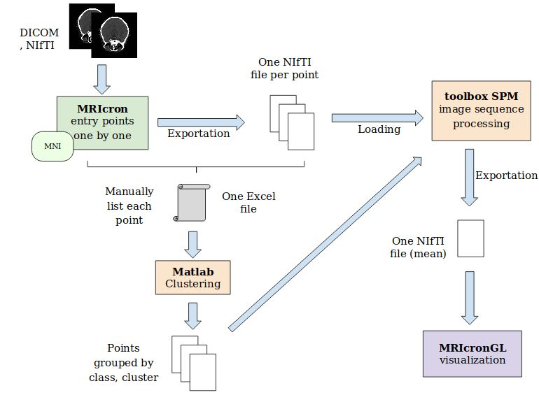

Global presentation
Brain-Mapper is the product of a 5-month collaboration between the Central Hospital of Nancy, France (CHRU in french) and Computer Science and Engineering students at TELECOM Nancy
The aim of this project was to simplify the treatment chain of neurosurgeon Dr. Fabien Rech, who had to use several librairies, software and methods to extract interesting data from NIfTI files.
The workchain of NIfTI processing and information extraction carried out by Dr. Rech for his thesis work was the following one :

Our aim was to simplify this work chain and offer the possibility to manage NIfTI, extract the interesting data from them to use it for calculations and clustering algorithms
Software usecase
This software is written in Python. Its user interface is written in PyQt 4.
It can be used to create several sets and image collections associated with brain responses or patients, that will contain different images, in the NIfTI format and standards.
The user can then extract data from the loaded NIfTI files to perform basic calculations or apply clustering algorithms to this data.
Calculations and clustering results can be exported as NIfTI or CSV files, as well as the original NIfTI files. Data can be imported as well as NIfTI or Excel files and the user can specify
a workspace directory from which files will be automatically imported
WARNING
This software was designed for the processing of binary NIfTI files, i.e. NIfTI files where voxels have an intensity either equal to zero or equal to 1.
Data extraction is still quite naive : our algorithms extract all points that have an intensity value greater than zero. Thus, if you have NIfTI files with the MNI template
still as a background and your selected regions, our software will extract a list containing all coordinates that have an intensity value other than zero.
We are currently working on a version of the software that allows the user to specifiy a threshold for data extraction but for now, it will be best to use only binary NIfTI files.
Otherwise, extraction time and performance may hinder the utility of the software
Thus, the current version of this software allows the user to :
- Open NIfTI files ('.nii' or in compressed format '.nii.gz') and put them in
Sets, which are associated with a brain response and Image Collections, associated mostly to patients
- Import and export the workspace from/into a directory, whose structure will reflect that of the application (set folders, image collections subfolders...)
- Edit the content of sets and image collections, and change their names
- Visualize in a 3D graph the contents of a NIfTI image from the edition page
- Select several image collections, across all sets, containing the images to which calculations and clustering algorithms will be applied
- Perform several calculations on selected NIfTI files
- Extract data from selected NIfTI files and perform clustering methods on this data (KMeans, KMedoids, AgglomerativeClustering)
- Visualize cluster assignment proportions and samples silhouette through graphical representations in clustering page
- Calculate internal validation indexes for clustering results, such as Silhouettes, Mean Silhouette, Calinski-Habaraz score and Davis-Boulin index
- Save clustering and calculation results as sets and image collections within the application
- Export clustering assignments data table as a CSV file and clustering validation indexes as a Text file
- Export whole image collections or sets as NIfTI files
The NIfTI format
Our software can open compressed NIfTI formats ('.nii.gz')
Install
brainMapper is written in
Python 2.7
Dependencies
Our software uses the following Python libraries :
- PyQt 4 (>= 4.0.0)
- Numpy (>= )
- scikit-learn (>= )
- pyqtgraph (>= )
Linux and OSX
Windows
Install anaconda for windows: here. Tick the option "Add Anaconda to my PATH variable".
In a terminal :
- conda install python=2.7
- activate root
- conda install -c anaconda pyqt=4.11.4
- conda install numpy
- conda install scikit-learn
- conda install pyqtgraph
- conda install pyopengl
- conda install -c conda-forge nibabel
Download the .zip project on the GitHub repository. Decompress it, and create a .bat file (carefull with the extensions in windows, sometime a .txt will be added and you cannot see it.).
In the .bat file :
- cd brainMapper-master/UI
- python UI.py
This file has to be in the same folder than the decompressed .zip. Create a .bat shortcut on your Desktop.